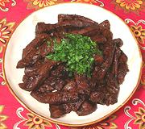

|
Liver in Adobo SauceSpain - Higado de Ternera en Adobo | ||||
| Serves: Effort: Sched: DoAhead: |
6 side ** 40 min Yes |
Liver without Onions! Who 'da thought? This dish can be made with beef liver, calf liver or pork liver. It is rather strongly flavored so should be served sparingly as an accent dish rather than a main dish. | |||
|
|
2 3 ---- 3 1/2 1/8 3 1/3 1/2 1/2 1/4 ---- |
# T --- cl T t T c t t t --- |
Liver (1) Olive Oil -- Sauce Garlic Oregano Chili Flake Sherry Vinegar (2) Water Paprika (3) Salt Pepper -- Garnish Parsley (flat) |
Prep - (15 min)
|
dsm_livera1 101208 stc209 - www.clovegarden.com
©Andrew Grygus - agryg@aaxnet.com - Linking to and
non-commercial use of this page is permitted.